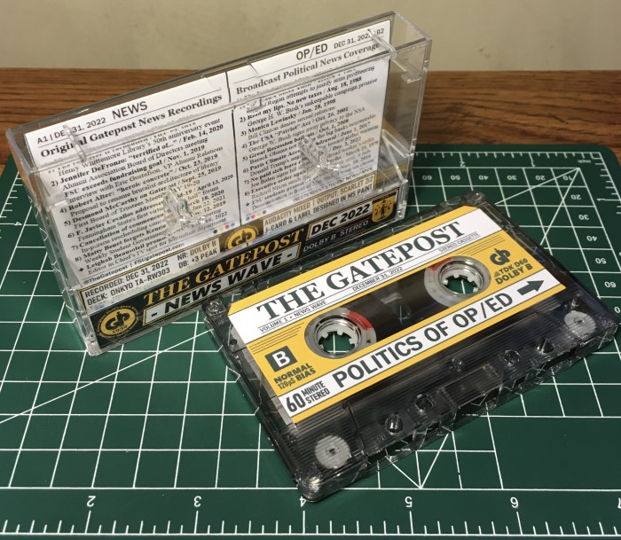

If you follow me on Instagram, you may have already seen this tape. I posted about it during The Gatepost’s 90th anniversary in March.
Coined, On The News Beat, it’s a play on the reporting of stories and the rhythm of songs, both blended together into one mix inspired by my time at Framingham State’s student paper.
What makes it special is that actual Gatepost recordings from my old articles were mixed into the music.
You can find the gist of it through that Insta post, how it was mixed: Audacity, what it’s recorded on: cassette, and where the cover art was made:
In this blog, I want to write out the full story of how The Gatepost mixtape came to be and expand on all the quotes it includes.
And it all starts with one extraordinary quote from an otherwise mundane meeting:
“I am terrified of TikTok. But we can talk about it.”
- Jennifer DeFronzo, director of Alumni Relations at Framingham State.
It’s a Friday afternoon and I’m looking forward to the weekend. But, here I am on campus instead covering yet another meeting for The Gatepost.
The Alumni Association Board of Directors meeting. Couldn’t they have gotten someone from News Writing class to cover this?
The photographer arrives a little later than me and we find ourselves a corner to stand in. I take out my notepad and recorder.
It’s a typical meeting with updates and announcements for all things alumni. The photographer is taking more photos than we honestly need, and I notice some of the board members getting annoyed at us.
Snap, snap, snap.
Maybe swayed by the photo shoot, one of them brings up “the Snapchat” as a possible new way to reach alumni.
The association is already big into Facebook, and Instagram is in the works too. So, now the talk turns to what else is trending online.
Snapchat? Definite maybe. But what about that other new social media app everyone’s getting into, TikTok?

Taped to The Gatepost wall.
Well, I guess it was worth coming here just for that quote alone.
I’ve never been into TikTok myself, I find it more annoying than terrifying. So, years later, it wasn’t the app that brought this quote back into my mind to inspire The Gatepost mixtape.
Instead, it was a few lyrics by this New Wave band, Re-Flex, I discovered during the summer of 2022:
“I wake each day and I go tick-tock.
I spend my life trying to beat the clock.”
From their hit, “Praying to the Beat.”
It’s the first verse of Side A on their 1983 album, The Politics of Dancing. The title track was featured in a scene from Atomic Blond and I decided to get the whole LP off just that alone.
Thirty seconds into dropping the needle and I’m struck with the idea: “wouldn’t it be funny if that alumni board quote opened this?”
Yes, yes it would.
The song itself doesn’t specifically relate to journalism, but rather to the rat-race of career work in general.
“The secretaries with their tick-tack typing.
They're hypnotized by their stereo typing.”
Stereo
being the left and right channels of audio, or used in this case to mean both hands on their keyboards. It’s relatable enough, even now as I type away on this blog.
After the TikTok quip, I mixed in one of my interviews with FSU’s VP of Development and Alumni Relations about their better than expected $4 million fundraising effort in 2019. “Boy, that’s a lot.”
And one more recording, Professor Robert Alter’s “heroic concrete” speech during the Whittemore Library’s 50th anniversary, finds a way into the song too. The library is of brutalist architecture.
The final mixing is absolutely horrendous, and I love it.
But, it’s still not quite the right song to hit off a whole 60-minute mixtape about reporting the news with.
I needed the first track to be more direct, a song that immediately screams News Wave when you hit play. So, “Here Is The News” by Electric Light Orchestra opens the tape, featuring the first recording of the mix.
“Are you here for The Gatepost?”
Playing off Re-Flex’s lyric about tick-tack typing, I used sound effects from a typewriter to transition into the third song, “Maybe Monday” by Til Tuesday.
But like “Praying to the Beat,” this one’s a bit of a stretch to relate with news writing too. It’s supposed to be about a girl waiting for a boy she likes to call her.
“Maybe Sunday. Maybe Monday.
Maybe never!”
But for our purposes, let’s just say it’s a reporter waiting for their contact to call after being left on read for an interview. Still annoyed with a few of those ghosts.
At the very end of the song, though, I did add a phone ringing sound effect so that none other than Desmond McCarthy can pick up. The Gatepost’s legendary, longstanding advisor of course needs a part in this.
Starting off as a quasi technical support call, Desmond and other department chairs are in the midst of trying to vote on new Covid policy through Zoom. But, the process of actually submitting their votes isn’t very intuitive.
It’s one of the more humorous examples of the chaos and confusion seen during the University’s unprecedented move to online learning in 2020.
The latter part is a snippit from a 2018 Board of Trustees meeting where Desmond is promoting the paper. It’s backdropped over “Headline News” - a production track from Network Music Ensemble.
Segueing into “Newspapers” by Stan Ridgway is a shorter and more mellow song about the life of a reporter.
“I work for the newspapers. Any news is good news I always say.
But I don't write no daily column. Talk is cheap and so is my pay.”
There’s no recordings mixed into this track, but it precedes a pair of very newsworthy addresses by President F. Javier Cevallos in the next one, detailing the University’s response to
Along with shutting down campus and moving to an online-only classroom experience, student organizations like The Gatepost were also forced to adapt.
We may have lost our office space and print edition, but we were proud to continue publishing online each week as usual, even as other student papers went on furlough.
Still, the overall outlook on life during Covid was bleak.
“I know that this is a very difficult time for everyone,” said Cevallos during his address. “When we’re thinking about the challenges we’re facing and the things that are gonna be coming our way, it’s certainly not an easy time for anyone.”
His speech plays over The Fixx’s hit single, “Stand or Fall.”
“An empty face reflects extinction
Ugly scars divide the nation
Desecrate the population
There will be no exhaultation”
The lyrics were originally written about theaters of war in Europe and whether citizens will “stand or fall” to forces trying to invade them. But for this tape, the force can be interpreted as COVID-19.
And even though we did finally stand up to the disease through social distancing and vaccination, its effects will still linger for some time.
I’m still working the same job I took after graduation when it was one of the only places hiring, anyway.
Not the on-campus job I was expecting
A sound recording of my postal truck’s engine starting up melds into the next song, “This Is The Day” by The The.
Vrooom
Its lyrics are about self-reflection and restlessly thinking on how the past could have worked out better.
“You could have done anything, if you wanted
And all your friends and family think that you're lucky
But the side of you they'll never see
Is when you're left alone with your memories”
I think it serves as a good analogy for the class of 2020’s experience, losing our last days on campus and never getting a proper commencement ceremony for all the work we did.
Yes, we’re lucky to have our degrees, and now that the pandemic is mostly over we’re free to pursue our dreams with them. But, there’s still a hole left from the time we lost in isolation after our friends and campus community were abruptly taken away.
It’s fitting then that the next recording is a pre-covid flashback, from one of the first events I covered for the news section. The inauguration of new senators for the Student Government Association.
Trying to lighten the mood after the last two tracks, this one features an innocent flub by the then SGA president who forgot one of the new senator’s names. “Sorry!”
It sarcastically opens to the Don Henley classic, “Dirty Laundry.” A song that criticizes one of the less noble aspects of news reporting when stories are sensationalized just to get clicks.
The final song on the tracklist is “News at Ten” by The Vapors. There’s no greater meaning to it being here other than it fits the News Wave genre.
But, the last recording to end Side A comes from yours truly.
“Alright, and that wraps everything up,” said at the end of a report to my best friend and co-writer on many articles,

Gatepost’s first coverage in a digital world
One of the articles we co-wrote, a feature about “The Uncensored Library” in Minecraft, served as the inspiration for the tape’s original cover art. You can read that feature here!
Then the alt cover uses a photo of my postal truck in front of May Hall, taken when I was sent to deliver packages to campus.
The design is heavily inspired by The Gatepost’s print edition, down to every little detail. Even the colorful, circular registration marks at the bottom left of the page.
I made them both in MS Paint, mainly just by drawing line art around text fonts. They connect to a greater J-Card template that can be printed, cut out and folded to fit into a cassette case.
On the outside, you see the cover art, but when you open it up and take out the tape, you’ll also find a list of all the quotes featured on both Side A and Side B, spiffed up to look like little articles.
I’ll save the flip side, The Politics of Op/Ed, for another blog post. But essentially, it features unpopular presidential policy speeches mixed with songs that disagree with them, making it an editorial in and of itself.
All the music and quotes were mixed in Audacity, a free audio editing software, and then recorded onto TDK D-60 blank tape.
I recorded it hot at +3db in Dolby B stereo for minimal hiss. The audio was fed from my laptop through a Focusrite 2i2 audio interface into my main cassette deck at the time, an Onkyo TA-RW303.
And, as of yet, this is still the best mixtape I’ve ever made!
Enjoying the fruits of my labor, while doing manual labor
...
... Oh.
Are you still here?
Great. Because just like the mixtape, that cushy last bit up there was a false summit too.
Wait a few seconds after the “final recording” ends to hear a hidden message from our Editor in Chief:
Leighah hates this ad, so I had to include it somewhere ;)